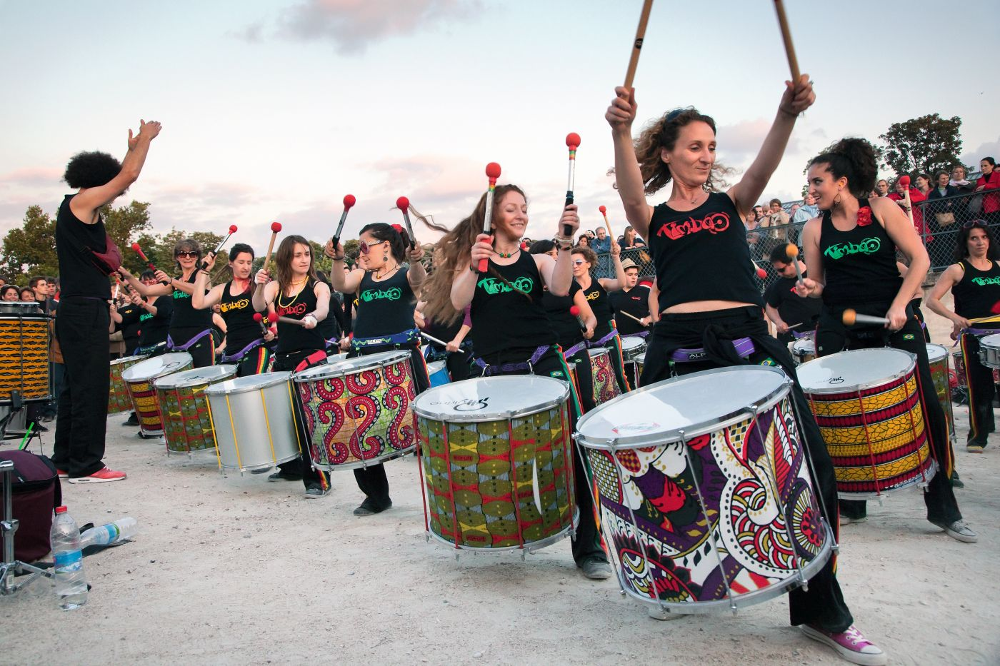

La Fête de la Musique
Bonjour et bienvenue sur podcastfrancaisfacile.com. Aujourd’hui, un texte intitulé « la Fête de la Musique ». Vous pouvez imprimer les exercices de ce texte. Je vais lire ce texte trois fois. Une fois à vitesse normale, une fois lentement et une troisième fois à vitesse normale. C’est parti.
La Fête de la Musique existe depuis 1981. Normalement, elle a lieu chaque année le 21 juin. La Apprendre le Français - La Fête de la Musiqueparticularité de cette fête est qu’elle se passe la plupart du temps dans la rue. Cette fête, comme son nom l’indique, a pour thème la musique et rassemble tous ceux qui veulent jouer ou écouter de la musique. Les musiciens doivent juste prévenir la mairie qu’ils ont l’intention de jouer dans la rue ce jour-là et la mairie leur proposera un lieu.
Cette fête est gratuite et réunit tout le monde en un même endroit. Selon l’heure de la journée on verra plus ou moins de jeunes, de personnes âgées, de familles. Mais tout le monde partagera un moment de convivialité.
Ce jour-là, toutes les musiques sont au rendez-vous : jazz, rap, classique, hip hop. Parfois, la Fête de la Musique a lieu le samedi suivant afin qu’un maximum de monde y assiste. C’est notamment le cas dans les petites villes et les villages qui vont organiser un concert à cette occasion.

(Recuerda que las respuestas deben escribirse en francés)
Envoyer
Retour